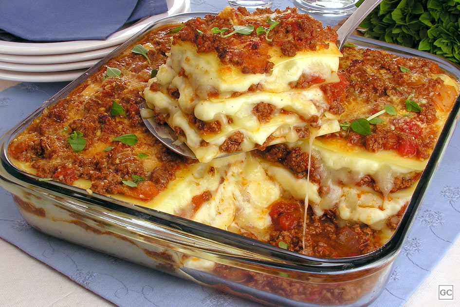

Receitas em Destaque



Descubra, compartilhe e aprimore suas habilidades na cozinha com Hey-Cheff.
Explore Agora
Explore receitas incríveis postadas por outros usuários. Cada receita tem um passo a passo detalhado para você seguir facilmente.

Crie seu perfil, siga outros chefs, curta e avalie receitas de 0.0 a 5.0 estrelas. Compartilhe suas próprias receitas e construa uma rede gastronômica.

Navegue por um feed público de receitas ou use a função "Surpreenda-me" para receber uma recomendação aleatória. Ideal para quem quer experimentar algo novo!
Siga outros usuários, comente nas receitas e compartilhe suas experiências culinárias. A comunidade Hey Cheff está pronta para te inspirar!
Avalie as receitas de outros usuários com notas de 0.0 a 5.0 estrelas. Sua opinião ajuda a comunidade a crescer!

Não sabe o que cozinhar? Use a função "Surpreenda-me" para receber uma receita aleatória e descubra novos sabores!
Biblioteca JavaScript para construção de interfaces de usuário. Utilizada no front-end do Hey-Cheff para criar componentes reutilizáveis e dinâmicos.
Superset de JavaScript que adiciona tipagem estática. Garante maior segurança e qualidade no código do Hey-Cheff.
Biblioteca para gerenciamento de estado global. Usada no Hey-Cheff para controlar dados compartilhados entre componentes.
Cliente HTTP para fazer requisições a APIs. Utilizado no Hey-Cheff para buscar e enviar dados ao back-end.
Framework de testes para JavaScript. Garante a qualidade do código do Hey-Cheff através de testes unitários e de integração.
Transpilador de JavaScript. Usado no Hey-Cheff para garantir compatibilidade com versões mais antigas dos navegadores.
Ferramenta de linting para JavaScript e TypeScript. Mantém o código do Hey-Cheff limpo e padronizado.
Banco de dados NoSQL. Armazena dados do Hey-Cheff, como receitas, perfis de usuários e interações.
Banco de dados em memória. Usado no Hey-Cheff para cache e gerenciamento de sessões.
Ambiente de execução JavaScript no back-end. Utilizado no Hey-Cheff para construir APIs e serviços.
Linguagem de programação usada no back-end do Hey-Cheff para lógica de negócios e integrações.
Linguagem de programação usada no front-end, em conjunto com TypeScript e React Native.
Plataforma de containerização. Usada no Hey-Cheff para distribuição e deploy em nuvem.
Sistema de controle de versão. Utilizado no Hey-Cheff para gerenciamento de código-fonte.
Plataforma de hospedagem de código. Usada para versionamento e colaboração no projeto Hey-Cheff.
Plataforma de CI/CD e versionamento. Utilizada para integração contínua no Hey-Cheff.
Ferramenta para testar APIs. Usada no desenvolvimento do Hey-Cheff para validar endpoints.
IDE utilizada no desenvolvimento do back-end do Hey-Cheff.
Editor de código utilizado no desenvolvimento do front-end e back-end do Hey-Cheff.
Usado para estilização e personalização da interface do Hey-Cheff.
Framework CSS para criação de templates responsivos no Hey-Cheff.
Integração com APIs do Google para funcionalidades como autenticação e mapas.
Plataforma de deploy e hospedagem para o front-end do Hey-Cheff.
Conheça nossa equipe
Em 2022 nos juntamos para desenvolver o HeyCheff como projeto integrador do curso de desenvolvimento de sistemas multiplataforma na Fatec Cotia. Iniciamos nossa equipe com Bruno, Murilo e Eduardo, posteriormente o Felipe se uniu ao nosso time. Somos apaixonados por tecnologia e queremos transmitir essa paixão por meio do HeyCheff.
Bruno Guêz
Dev Front-end
Eduardo Luis
Dev Front-end e IA
Murilo Tegani
Dev Front-end e Back-end
Felipe Braga
QA